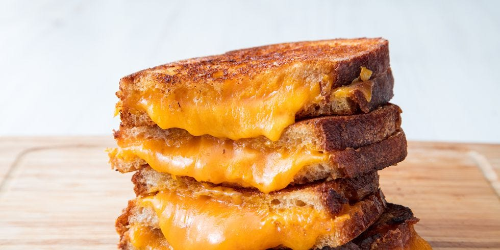

Grilled Cheese Sandwhich

The perfect grilled cheese sandwhich
Ingredients
- Bread (white bread preferred)
- 2 slices of White Cheddar (or any cheese of your choice)
- Unsalted Butter
Steps
- Pre-heat Skillet or nonstick pan
- In hot pan add a table spoon of unsalted butter
- Place one slice of bread in pan, followed by 2 cheese slices on top of bread in pan and place another piece of bread on top of cheese
- Check the bottom of the sandwhich every 15 seconds, checking for a nice golden brown crust. Keep checking, do not allow to burn
- Once the sandhwich is the desired color underneath, flip on to the other side, reduce heat, and wait for that side to become golden brown
- If the cheese has not melted yet, turn off heat all together and cover pan with a lid until cheese has melted
- Cut sandwhich in half, and serve